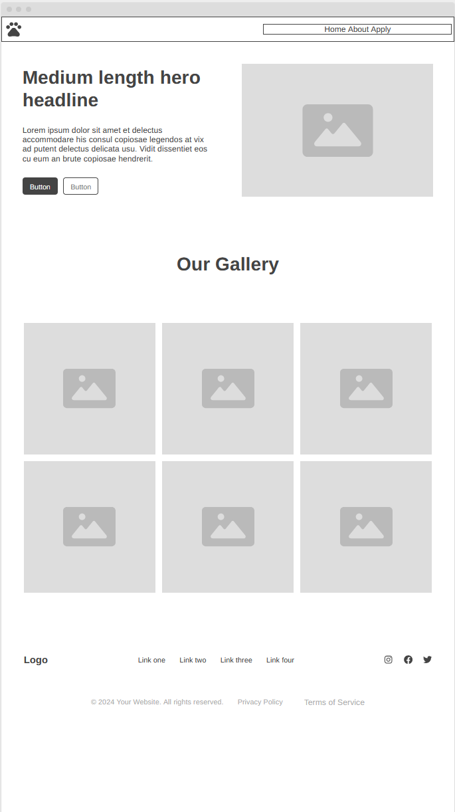

Site Name:
Site Purpose:
This site hosts a gallery of images and information on the animals available for adoption. It will contain a form where visitors will be able to request more information, schedule a meeting, or submit an adoption request. There will also be a history/about section.
Scenarios:
How can I apply to adopt? What pets are available?
Color Schema:
Headlines / accents: Warm coral — #FF6B6B Background: Soft warm cream — #FFF8F0 Paragraph / body text: Dark charcoal — #333333 Secondary accents / buttons: Golden amber — #F6AE2D Cards / surfaces: Warm beige — #F7EFE6 subtle borders: #E6DDD2.
Typography:
I plan to use Pacifico for headlines, and lato for body text.
